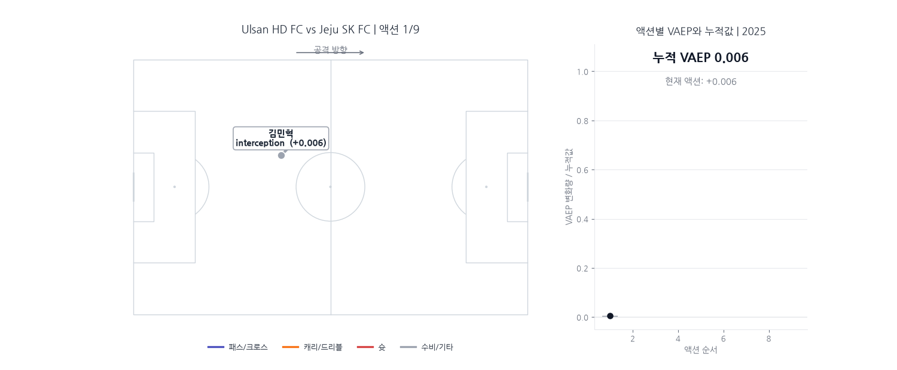
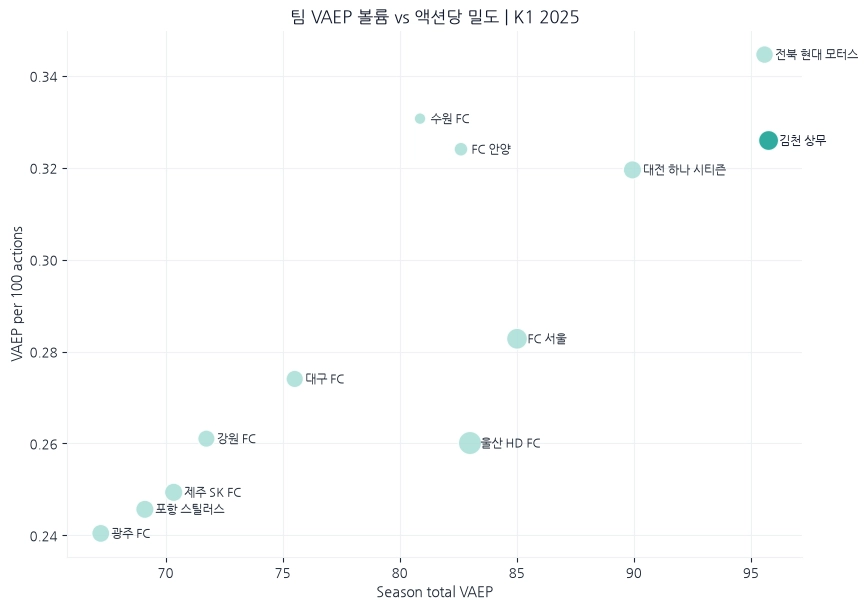
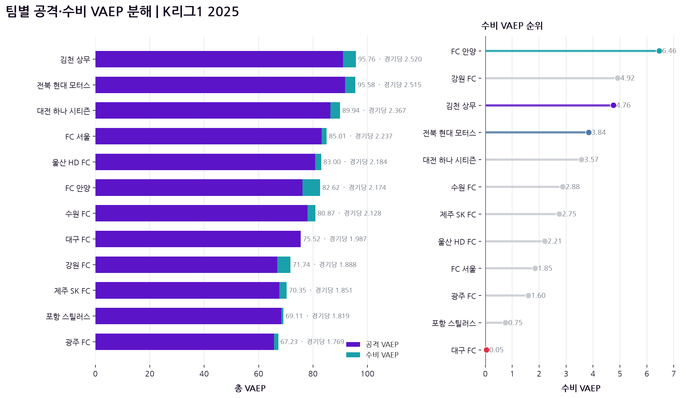
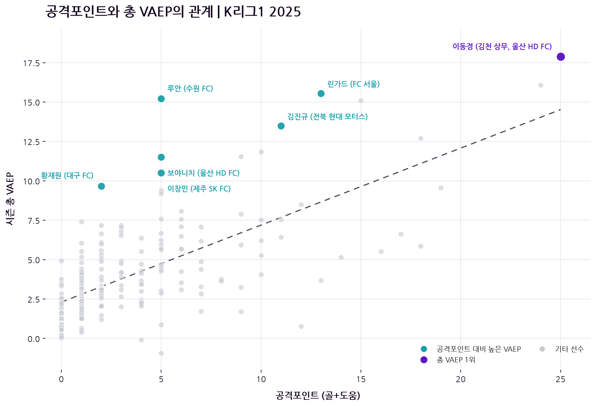
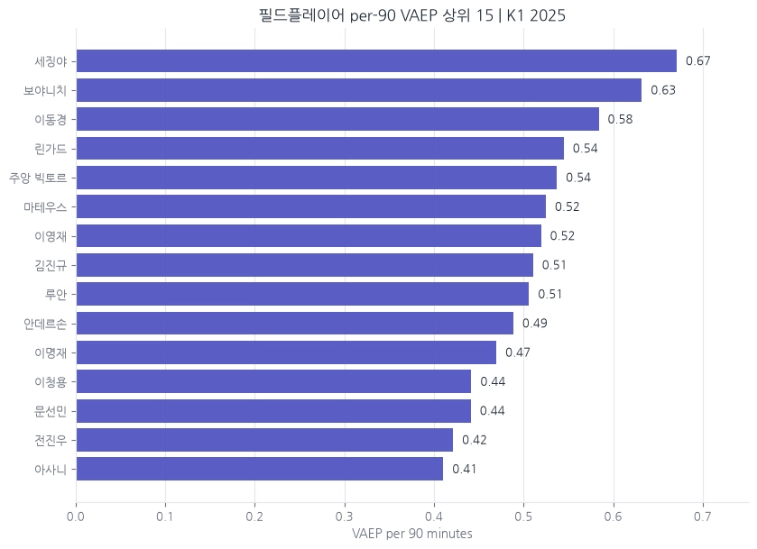
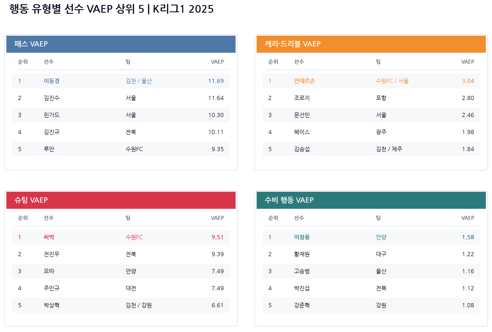
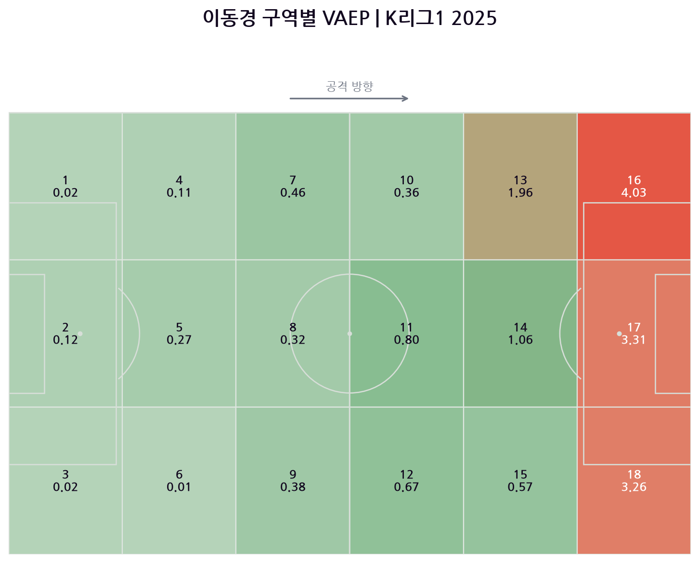
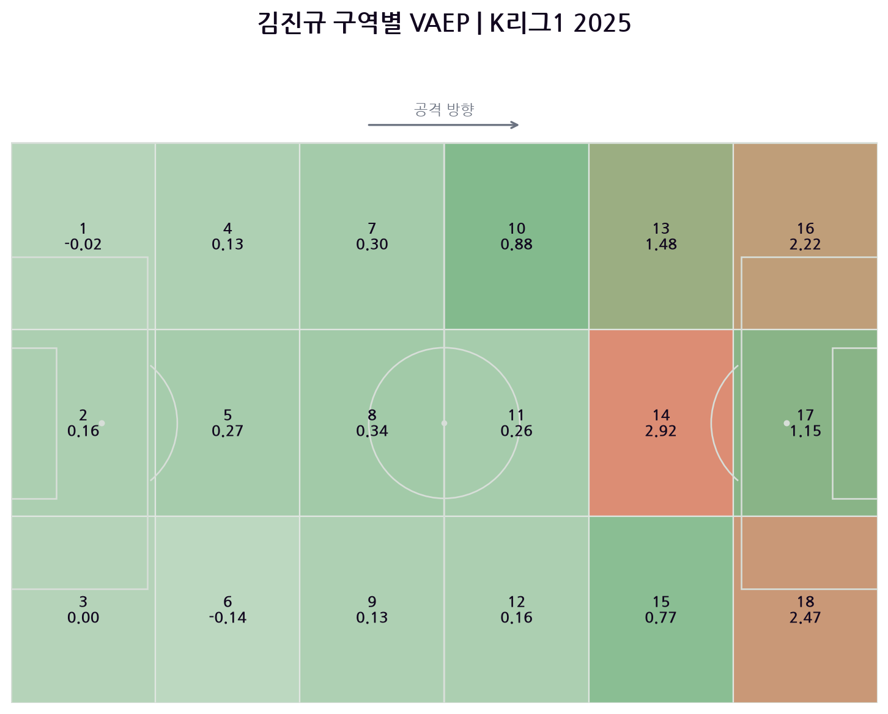
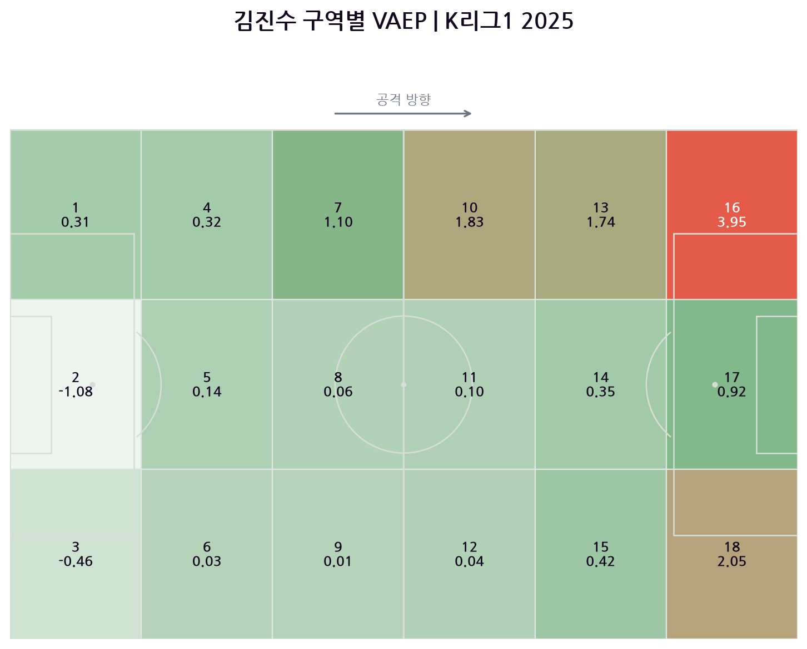

지난 포스트에서 다뤘던 xT(Expected Threat)를 통해 누가 공을 더 위협적인 위치로 옮겼는지 살펴봤습니다. 패스와 드리블이 공격의 위협을 얼마나 높였는지 보여준다는 점에서, xT는 골과 도움 이전의 과정을 이해하는 유용한 지표였습니다.
하지만 축구의 모든 가치가 공을 전진시키는 과정에서만 만들어지는 것은 아닙니다. 전진 패스가 실패해 상대 역습으로 이어질 수도 있고, 반대로 센터백의 인터셉트나 안전한 탈압박 패스가 실점 위험을 크게 낮출 수도 있습니다. xT가 주로 성공한 패스와 볼 운반이 공이 놓인 위치의 위협도를 얼마나 높였는지 보여준다면, 축구에는 그 범위 밖에 있는 행동도 많습니다.
이 문제에서 출발한 지표가 VAEP(Valuing Actions by Estimating Probabilities)입니다.
VAEP는 KU Leuven(뢰번 가톨릭대학교)의 Jesse Davis 교수 연구실에서 제안한 행동 가치 평가 프레임워크입니다. 연구진은 행동 전후의 득점·실점 확률 변화를 이용해 패스와 드리블, 슈팅뿐 아니라 태클과 인터셉트까지 같은 기준으로 평가하는 방법을 제시했습니다.


(오른쪽) Hudl StatsBomb의 OBV 설명 영상.출처: Hudl StatsBomb
이후 이러한 확률 기반 행동 가치 평가는 축구 분석의 주요 방법론으로 확장됐습니다. 현재 VAEP와 함께 Hudl StatsBomb의 OBV(On-Ball Value) 등 유사한 모델이 개발되어 구단의 선수 평가, 스카우팅과 경기 분석에 활용되고 있습니다.
그렇다면 VAEP로 본 2025년 K리그는 어떤 모습일까요?
이동경은 13골 12도움을 기록했습니다. 그가 리그에서 가장 영향력 있는 공격 자원 중 한 명이었다는 사실은 새로운 지표가 없어도 알 수 있습니다.
반면 골과 도움만으로는 쉽게 드러나지 않는 기여도 있습니다. K리그에서도 이 빈칸을 VAEP로 들여다보려는 시도가 시작됐습니다. 2025 K리그 테크니컬 리포트에도 VAEP를 주요 분석 지표로 소개하고, K리그 팀들의 공격·수비 기여와 Zone 14·17에서 만들어진 행동 가치를 비교했습니다.

이번 글에서는 여기서 한 단계 더 들어가 팀뿐 아니라 개별 선수와 행동을 살펴봅니다. 골과 도움이 충분히 설명하지 못한 가치는 누구의 어떤 행동에서 만들어졌을까요? 먼저 VAEP가 행동에 가치를 부여하는 방법부터 알아보겠습니다.
1. VAEP란 무엇인가
xT가 공의 시작 위치와 도착 위치를 중심으로 위협의 변화를 평가한다면, VAEP는 위치를 포함한 행동의 맥락을 바탕으로 경기 상태가 얼마나 달라졌는지를 평가합니다.
같은 위치로 향한 패스라도 성공 여부와 직전 플레이, 경기 상황에 따라 이후의 득점·실점 가능성은 달라질 수 있습니다. VAEP는 이러한 차이를 반영해 패스·드리블·슛뿐 아니라 볼 손실·태클·인터셉트·클리어링까지 같은 단위로 평가합니다.
핵심 아이디어는 간단합니다. 어떤 행동이 일어나기 전과 후의 득점·실점 확률을 비교하는 것입니다.
+ [P(실점 | 행동 전) − P(실점 | 행동 후)]
행동 이후 팀의 득점 확률이 높아지면 공격 가치가 생깁니다. 반대로 실점 확률이 낮아지면 수비 가치가 생깁니다. 두 값을 더한 것이 해당 행동의 VAEP입니다.
예를 들어 수비형 미드필더가 상대 압박 사이로 전진 패스를 연결해 다음 공격의 득점 확률을 높였다면, 직접 도움을 기록하지 않아도 양의 VAEP를 얻습니다. 센터백이 상대의 위험한 전진을 끊어 실점 확률을 낮췄을 때도 마찬가지입니다. 반대로 자기 진영에서 공을 잃어 상대의 득점 가능성을 높인 행동은 음의 값으로 평가됩니다.


이처럼 각 행동의 VAEP를 시퀀스 순서대로 살펴보면, 마지막 슈팅이 대부분의 가치를 만들었는지, 아니면 그 이전의 탈취·패스·드리블이 가치를 단계적으로 쌓았는지도 확인할 수 있습니다.
따라서 xT가 주로 “공을 얼마나 위협적인 위치로 옮겼는가”를 묻는다면, VAEP는 한 단계 더 나아가 “이 행동은 당시의 맥락에서 팀의 득점과 실점 가능성을 얼마나 유리하게 바꾸었는가?”에 대해 묻습니다.
2. VAEP로 본 팀마다 다른 가치의 축적 방식

그래프의 가로축은 시즌 동안 쌓은 총 VAEP로 가치의 규모를 보여줍니다. 세로축은 100번의 온더볼 행동당 만들어낸 VAEP로, 행동 수를 고려한 가치의 밀도를 나타냅니다. 오른쪽으로 갈수록 시즌 전체에서 더 많은 가치를 누적했고, 위쪽에 위치할수록 같은 수의 행동으로 득점·실점 확률을 더 크게 바꿨다는 뜻입니다.
이 결과를 토대로 보면 2025년 K리그1에서 가장 높은 누적 VAEP를 기록한 팀은 김천상무였습니다. 김천은 95.76을 기록했고, 전북 현대가 95.58로 뒤를 이었습니다.
김천과 전북은 총 VAEP에서는 거의 같았지만, 100행동당 VAEP는 전북이 0.35로 김천의 0.33보다 높았습니다. 김천이 더 많은 행동을 통해 가치를 누적했다면, 전북은 상대적으로 적은 행동으로 비슷한 총량을 만들었습니다. 대전과 안양도 행동당 가치에서 상위권이었던 반면, 서울과 울산은 여러 차례의 전개를 통해 가치를 쌓는 경향을 보였습니다. 이런 행동당 VAEP는 소유 방식과 슈팅 비중 등 팀의 플레이스타일에 영향을 받으므로, 절대적인 효율 순위보다 가치를 축적하는 방식의 차이로 해석하는 것이 적절합니다.

총량과 가치 밀도만으로는 그 가치가 공격과 수비 중 어느 방향에서 만들어졌는지 알 수 없습니다. VAEP는 각 행동의 가치를 득점 확률을 높인 공격 가치와 실점 확률을 낮춘 수비 가치로 나눠볼 수 있습니다. 다만 현재 공을 가진 팀의 관점에서 가까운 미래의 득점·실점 확률을 계산하기 때문에, 골과 슈팅이 만드는 공격 가치는 직접적이고 크게 나타나는 경향이 있습니다. 반면 수비 가치는 여러 행동에 분산되고 오프더볼 수비는 포함되지 않으므로, 값이 작다고 해서 수비의 중요성이 낮다는 뜻은 아닙니다.
이를 나눠보면 김천과 전북의 차이가 조금 더 분명해집니다. 전북은 공격 VAEP 91.74로 김천의 90.99보다 높았지만, 수비 VAEP에서는 김천이 4.76으로 전북의 3.84를 앞섰습니다. 전북이 득점 가능성을 높이는 행동에서 조금 더 많은 가치를 만들었다면, 김천은 실점 위험을 낮추는 가치까지 더하며 근소하게 총합 1위에 올랐습니다.
안양의 수비 VAEP는 6.46으로 리그에서 가장 높았습니다. 공격 가치의 총량은 최상위권과 차이가 있었지만, 기록된 행동 이후 실점 위험을 낮추는 방향에서는 가장 많은 가치를 쌓았습니다.
반대로 대구의 공격 VAEP는 75.47이었지만 수비 VAEP는 0.05에 그쳤습니다. 지난 xT 분석에서 대구는 공을 위험 지역으로 옮기는 데 비해 이를 좋은 기회로 완성하지 못한 팀으로 나타났습니다. VAEP는 공격 전진뿐 아니라 상대에게 넘어간 위험을 다시 낮추는 과정에서도 충분한 순가치를 만들지 못했다는 점을 보여줍니다.
결국 비슷한 총 VAEP를 기록한 팀이라도 가치가 만들어진 과정은 같지 않았습니다. 김천과 전북은 총량에서는 거의 같았지만 공수의 구성이 달랐고, 안양은 수비 가치, 전북은 행동당 가치에서 두드러졌습니다. VAEP는 순위만이 아니라 각 팀이 어떤 방식으로 경기 상태를 유리하게 바꾸었는지를 보여줍니다.
3. 공격포인트가 설명하지 못한 선수들
팀의 VAEP는 결국 선수들이 수행한 행동에서 만들어집니다. 그렇다면 골과 도움으로 본 선수 평가와 VAEP로 본 선수 평가는 얼마나 비슷했을까요?
아래 그래프는 500회 이상의 행동을 기록한 필드플레이어를 대상으로 공격포인트와 총 VAEP의 관계를 보여줍니다. 오른쪽으로 갈수록 골과 도움이 많고, 위로 갈수록 시즌 동안 더 많은 VAEP를 쌓은 선수입니다.


이동경은 25개의 공격포인트와 총 VAEP 17.89를 기록하며 두 기준에서 모두 가장 높은 위치에 있었습니다.
하지만 모든 선수가 추세선 가까이에 위치한 것은 아닙니다. 추세선 위쪽에 있을수록 비슷한 공격포인트를 기록한 선수보다 더 많은 VAEP를 쌓았다는 뜻입니다.
가장 눈에 띄는 선수는 루안입니다. 루안은 5골 0도움에 그쳤지만 총 VAEP는 15.22로 리그 최상위권이었습니다. 린가드와 김진규도 공격포인트에 비해 높은 VAEP를 기록했고, 황재원·보야니치·이창민 역시 추세선보다 위쪽에 위치했습니다. 득점과 마지막 패스로 기록되지 않았더라도 경기 상태를 유리하게 바꾼 행동이 많았다는 의미입니다.
출전시간을 보정한 90분 당 VAEP 결과를 봤을 때, 세징야 또한 높은 순위를 기록했고, 보야니치가 0.63으로 뒤를 이었습니다. 총 VAEP 1위였던 이동경은 3위이고, 루안도 0.51로 상위권을 유지해 높은 총 VAEP가 단순히 많은 출전시간에서 나온 결과만은 아니었음을 보여줍니다.

행동 유형별로 나누면 선수들이 가치를 만든 방식의 차이가 분명해집니다. 패스 VAEP에서는 이동경이 11.69로 가장 높았고, 김진수가 11.64로 뒤를 이었습니다. 루안도 9.35로 5위에 올라, 그의 높은 총 VAEP가 슈팅뿐 아니라 공격 전개 과정에서도 만들어졌음을 보여줍니다.
캐리·드리블에서는 안데르손, 슈팅에서는 싸박이 가장 높은 VAEP를 기록했습니다. 반면 수비 행동에서는 이창용이 1.58로 1위에 올랐습니다. 2골 0도움만으로는 드러나지 않았던 이창용의 기여가 태클과 인터셉트 등에서 나타난 것입니다.
다만 이 값은 행동당 평균이 아니라 시즌 누적 VAEP입니다. 따라서 패스와 슈팅처럼 발생 빈도가 다른 행동의 숫자를 직접 비교하기보다, 각 행동 유형에서 어떤 선수가 두드러졌는지를 보는 것이 적절합니다. 같은 높은 VAEP라도 이동경은 패스, 안데르손은 볼 운반, 싸박은 슈팅, 이창용은 수비 행동을 통해 서로 다른 방식으로 가치를 만들었습니다.
4. 같은 높은 행동 가치, 서로 다른 공간



이동경의 가치는 상대 골문과 가까운 지역에 집중됐습니다. Zone 16·17·18(상대 페널티지역의 양 측면과 중앙)에서 각각 4.03, 3.31, 3.26의 VAEP를 기록했습니다. 세 구역에서 만든 가치만 10.60으로, 시즌 총 VAEP의 절반 이상을 차지합니다. 이동경은 특정 측면에 머물기보다 상대 페널티지역 전반에서 득점 가능성을 직접 높였습니다.
김진규는 Zone 14(상대 페널티박스 바로 앞 중앙)에서 가장 높은 2.92를 기록했습니다. Zone 16과 18(상대 페널티지역의 양 측면)에서도 각각 2.22와 2.47의 가치를 만들었지만, 이동경과 달리 박스 안보다 박스 앞 중앙에서 가장 높은 값이 나타났습니다. 공격을 직접 마무리하기보다 중앙에서 마지막 패스와 다음 공격의 방향을 결정하는 역할이 반영된 결과입니다.
김진수는 한쪽 측면을 따라 가치가 이어지는 모습이 뚜렷했습니다. Zone 7·10·13·16(왼쪽 측면)에서 가치가 점차 높아졌고, 상대 진영 깊은 측면인 Zone 16에서는 3.95로 가장 높은 값을 기록했습니다. 중앙의 Zone 14보다 측면에서 훨씬 많은 가치를 만든 것은 직접 박스 안으로 진입하기보다 전진 패스와 크로스로 공격을 연결하는 풀백의 역할을 보여줍니다.
세 선수는 모두 패스에서 높은 VAEP를 기록했지만 가치를 만든 공간은 달랐습니다. 이동경은 상대 골문과 가까운 여러 구역에서, 김진규는 박스 앞 중앙에서, 김진수는 측면을 따라 전진하며 경기 상태를 유리하게 바꿨습니다.
이 구역별 누적 VAEP는 행동의 가치뿐 아니라 해당 구역에서 기록한 행동 수의 영향도 받습니다. 따라서 색이 진한 구역을 한 행동의 효율이 가장 높은 공간으로 단정하기보다, 선수가 시즌 동안 어느 위치에서 반복적으로 가치를 쌓았는지를 보여주는 공간적 프로필로 해석하는 것이 적절합니다.
결론: 좋은 선수는 마지막 장면에만 있지 않다
2025년 K리그1에서 가장 많은 누적 VAEP를 만든 팀은 김천이었고, 선수 중에서는 이동경이 가장 높은 값을 기록했습니다. 이동경의 결과는 13골 12도움이라는 공격포인트와도 일치했습니다.
하지만 VAEP의 의미는 익숙한 1위를 다시 확인하는 데만 있지 않습니다. 5골 0도움에도 높은 가치를 만든 루안, 90분당 VAEP에서 두드러진 보야니치, 수비 행동에서 가장 높은 가치를 기록한 이창용처럼 기존 기록만으로는 충분히 설명하기 어려운 선수들도 함께 드러났습니다.
물론 VAEP도 모든 것을 설명하지는 못합니다. 기록되지 않은 압박과 위치 선정, 공간을 만드는 움직임은 평가할 수 없으며, 누적값은 출전시간과 행동 수의 영향도 받습니다. 따라서 VAEP는 선수를 한 줄로 평가하는 최종 점수가 아니라, 골과 도움 사이에서 사라졌던 기여를 발견하기 위한 도구로 활용해야 합니다.
분석에 대한 질문이나 협업 제안은 thedatadribblers@gmail.com으로 보내 주세요.
코드 구현 홍미루
본문 작성 이민호, 권순재
검수 이민호